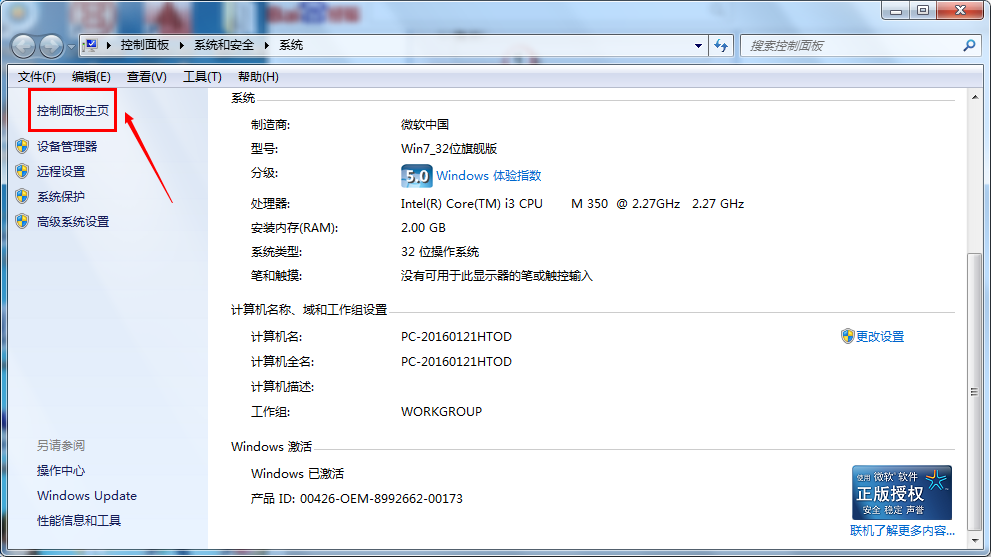

win7共享文件夹无权限访问
1939 次浏览2016.07.15更新
win7共享文件夹无权限访问有很多原因，比如工作组名称不同，设置不正确等等。
操作方法
-
01
要保证联网的各计算机的工作组名称一致。要查看或更改计算机的工作组、计算机名等信息,请右键单击“计算机”，选择“属性”。
-
02
如果相关信息需要更改，应该在“计算机名称、域和工作组设置”一栏，单击“更改设置”。
-
03
然后再单机“更改”。
-
04
输入你的计算机名后，再按“确定”。
当这一步结束后请重启计算机让设置生效。 -
05
接下来将更改win 7的相关设置。

打开“控制面板网络和 Internet网络和共享中心高级共享设置”。 -
06
启用“网络发现”、“文件和打印机共享”、“公用文件夹共享”；“密码保护的共享”部分则请选择“关闭密码保护共享”。
-
07
将需要共享的文件或者文件夹拖拽到公共文件夹里。如果需要工鞋一些特定的win 7文件夹，右键点击文件夹，选择“属性”。
-
08
点击“共享”选框和“高级共享”按钮。
-
09
勾选“共享此文件夹”后，单击“应用”，一定要记得点保存。
-
10
右键点击将要共享的文件夹,选择“属性”。在“安全”页上，单击“编辑”。
-
11
然后按一下“添加”按钮，输入Everyone，在下面的权限全部勾选。
-
12
最后一步是防火墙设置。
“控制面板/系统和安全/ Windows 防火墙”看一下防火墙设置，确保“文件和打印机共享”是允许的状态。 -
13
最后就可以查看共享文件了。依次打开控制面板〉网络和Internet〉查看网络计算机和设备〉(相应的计算机/设备名称)。
- End
特别提示
如果某文件夹被设为共享,它的所有子文件夹将默认被设为共享。
免责声明：
本页搜狗指南内容仅代表作者本人意见，若因此产生任何纠纷由作者本人负责，概与搜狗公司无关。本页搜狗指南内容仅供参考，请您根据自身实际情况谨慎操作。尤其涉及您或第三方利益等事项，请咨询专业人士处理。